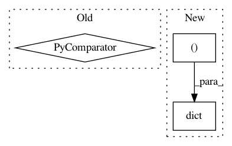

de00082780be884fc90e0113d323bfd63006ffba,main.py,Model,train,#Model#,428
Before Change
"train", hparams.BATCH_SIZE * hparams.MAX_N_SIGNAL, shuffle=True)):
max_len = max(map(len, data_pt[0]))
spectra = np.stack(
[np.pad(x, [(0, (-len(x))%max_len), (0,0)], mode="constant") for x in data_pt[0]])
spectra = np.reshape(
spectra,
[hparams.BATCH_SIZE, hparams.MAX_N_SIGNAL, max_len, hparams.FEATURE_SIZE])
After Change
for i_batch, data_pt in enumerate(dataset.epoch(
"train",
hparams.BATCH_SIZE * hparams.MAX_N_SIGNAL, shuffle=True)):
to_feed = dict(
zip(self.train_feed_keys, (
np.reshape(data_pt[0], [hparams.BATCH_SIZE, hparams.MAX_N_SIGNAL, -1, hparams.FEATURE_SIZE]),
hparams.DROPOUT_KEEP_PROB)))
step_summary, step_fetch = g_sess.run(
self.train_fetches, to_feed)[:2]
self.reset_state()
train_writer.add_summary(step_summary)
In pattern: SUPERPATTERN
Frequency: 3
Non-data size: 3
Instances
Project Name: khaotik/DaNet-Tensorflow
Commit Name: de00082780be884fc90e0113d323bfd63006ffba
Time: 2017-08-07
Author: junkkhaotik@gmail.com
File Name: main.py
Class Name: Model
Method Name: train
Project Name: samuelclay/NewsBlur
Commit Name: c258bbdd11d5d1a860ed4a6297f261618bfc9a9a
Time: 2012-09-27
Author: samuel@ofbrooklyn.com
File Name: utils/munin/newsblur_tasks_times.py
Class Name: NBMuninGraph
Method Name: graph_config
Project Name: miso-belica/sumy
Commit Name: 41762d1d6324683d26cb9417eb89578f3c4290d4
Time: 2015-08-02
Author: jgriggs@princeton.edu
File Name: sumy/summarizers/sum_basic.py
Class Name: SumBasicSummarizer
Method Name: _compute_tf